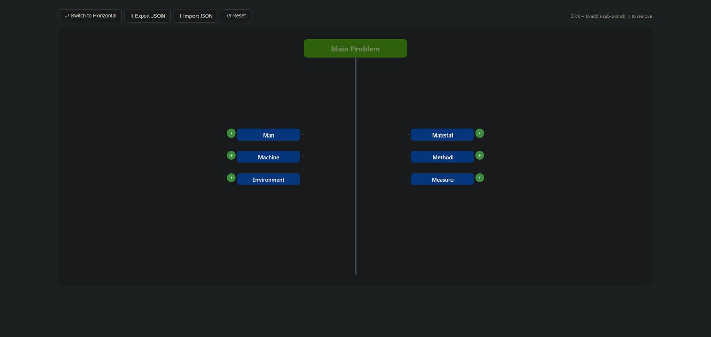

Ishikawa Creator
El diagrama de Ishikawa es una de las herramientas más útiles para encontrar la causa raíz de un problema, y una de las más incómodas de construir. Esta app conserva el método y descarta el dibujo.
- Rol
- Diseño y desarrollo completo
- Estado
- En vivo, código abierto
- Stack
- HTML y JavaScript, un solo archivo
El problema
Coordino calidad de software, y el diagrama de espina de pescado aparece cada vez que hay que entender por qué algo falló. El método funciona: obliga a separar categorías de causa y a bajar de la causa aparente a la real. Lo que no funciona es la forma. Dibujar la espina en una pizarra o en una herramienta de diagramas consume la mayor parte de la sesión, y reordenar una rama cuando alguien aporta una causa nueva significa rehacer el trazo. La herramienta termina compitiendo con el análisis.
Cómo lo resolví
La observación de partida es que un diagrama de Ishikawa no es realmente un dibujo: es un árbol. Categorías, causas dentro de cada categoría, y sub-causas debajo de esas. Representado como estructura anidada se llena tan rápido como se piensa, se reordena sin redibujar nada, y no pierde ni una pieza de la información que contendría la versión gráfica.
- Estructura anidada que refleja categorías, causas y sub-causas
- Exportación a JSON para guardar el análisis
- Importación del mismo JSON para retomarlo o modificarlo después
- Un solo archivo HTML, sin instalación ni cuenta

La decisión que define el proyecto
La tentación obvia era generar la espina de pescado al final, para entregar el diagrama "de verdad". Decidí no hacerlo. El valor del método está en la disciplina de clasificar causas, no en la figura; añadir el render habría duplicado el trabajo de mantenimiento y devuelto justo la rigidez que la app existe para evitar. Si alguien necesita la figura para un informe, el JSON tiene todo lo necesario para generarla en otra parte.
Cómo está construido
- Un archivo
index.html, sin dependencias ni proceso de build - Estado en memoria, serializado a JSON al exportar
- Publicado en GitHub Pages directamente desde el repositorio
- Repositorio público, con el código completo a la vista